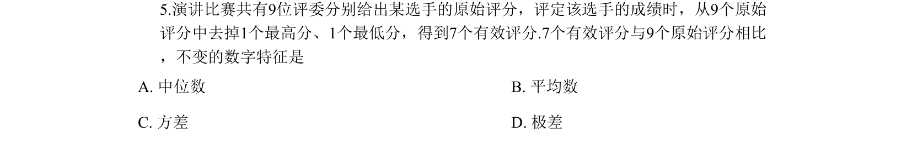
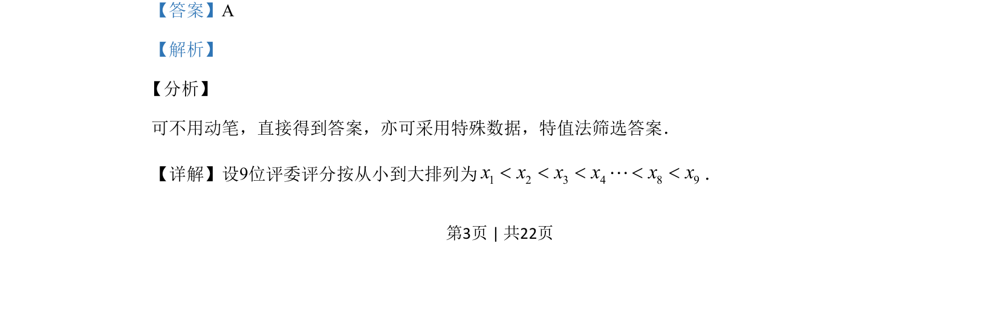

考点：中位数 平均数 方差 极差

该题通过评委评分去掉最高最低后的统计量变化，考查中位数、平均数、方差、极差的性质。

📄 原 PDF 第 3 页：
素材/真题/吉林/2008-2024·（吉林）数学高考真题/2019年高考数学试卷（理）（新课标Ⅱ）（解析卷）.pdf
5.演讲比赛共有9位评委分别给出某选手的原始评分，评定该选手的成绩时，从9个原始 评分中去掉1个最高分、1个最低分，得到7个有效评分.7个有效评分与9个原始评分相比 ，不变的数字特征是 A. 中位数 B. 平均数 C. 方差 D. 极差
【答案】A 【解析】 分析】 可不用动笔，直接得到答案，亦可采用特殊数据，特值法筛选答案． 【详解】设9位评委评分按从小到大排列为1 2 3 4 8 9x x x x x x< < < < <L． 【